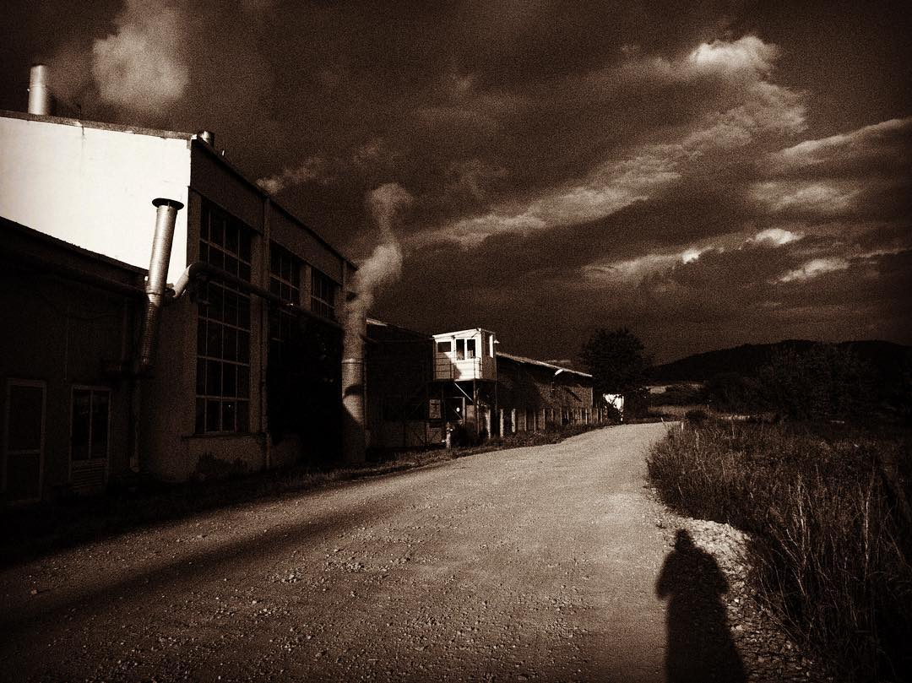

GFM-Example
GitHub Flavored Markdown Example
Index
- source
This is head1
=============
This is head 2
--------------- result
This is head1
This is head 2
table (PHP-Markdown style)
- source
First Header | Second Header
------------- | -------------
Content Cell | Content Cell
Content Cell | Content Cell- result
| First Header | Second Header |
|---|---|
| Content Cell | Content Cell |
| Content Cell | Content Cell |
- source
| Item | Value |
| --------- | -----:|
| Computer | $1600 |
| Phone | $12 |
| Pipe | $1 |- result
| Item | Value |
|---|---|
| Computer | $1600 |
| Phone | $12 |
| Pipe | $1 |
code
- source
```
this is code block
```- result
this is code block- source
```ruby
get '/' do
"Hello world "
end
```- result
get '/' do
"Hello world "
end- other ruby example
get '/' do
"Hello world "
end- some scala example:
trait TSDBWriter
protected implicit val scheduler: Scheduler
protected val metrics = Metrics.openTSDBMetrics
def config: TSDBConfig
def publishMessages(tsDataPoints: List[TSDataPoint]): Task[Continue]
def persistLeadershipValue(status: LeadershipStatus, now: DateTime): Task[Continue] =
val metric = "assetEngine.leadershipState"
val dp = TSDataPoint(
metric = metric,
timestamp = now.getMillis,
value = if (status.isMaster) 1 else 0,
tags = Map("host" -> s"${status.hostname}/${status.address}")
)
publishMessages(List(dp))
case class SomeCaseClass(attr1: String, attr2: Double)- some javascript examples:
const fs = require('fs')
const {promisify} = require('util')
const marked = require('marked')
const frontmatter = require('yaml-front-matter')
const jsdom = require('jsdom')
const { JSDOM } = jsdom
const colors = require('colors')
colors.setTheme({
silly: 'rainbow',
input: 'grey',
verbose: 'cyan',
prompt: 'grey',
info: 'green',
data: 'grey',
help: 'cyan',
warn: 'yellow',
debug: 'blue',
error: 'red'
})autolink
- source
http://mukaer.com- result

strikethrough
- source
this is ~~good~~ bad- result
this is good bad
Task Lists
- source
- [x] @mentions, #refs, [links](), **formatting**, and <del>tags</del> supported
- [x] list syntax required (any unordered or ordered list supported)
- [x] this is a complete item
- [ ] this is an incomplete itemresult
@mentions, #refs, links, formatting, and
tagssupported- list syntax required (any unordered or ordered list supported)
- this is a complete item
- this is an incomplete item
superscript
- source
this is the 2^(nd) time- result
this is the 2^(nd) time
underline
- source
This is _underlined_ but this is still *italic*- result
This is underlined but this is still italic
highlight
- source
This is ==highlighted==- result
This is ==highlighted==